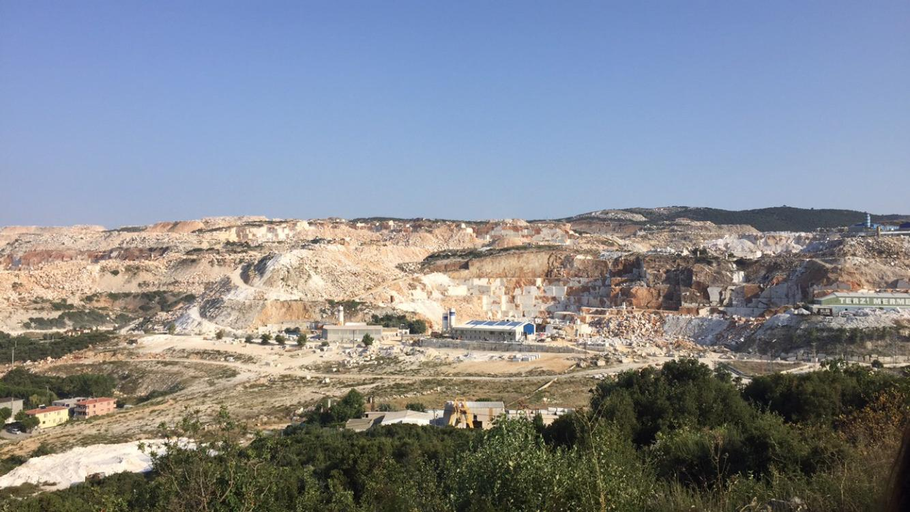

Marmara Island - Topağaç Village
ABOUT THE MARMARA ISLAND

Marmara Island is a district of Balıkesir in the Marmara Sea.
The island has a total of 5 villages : Çınarlı , Gündoğdu , Topağaç , Asmalı , Saraylar and Marmara center.
The transportation to the district is provided by water.
Marmara has made great progress in the production of table olives. Fishing is the main source of livelihood.
The island having 15% of Turkey's marble reserves is yet undiscovered by most people due to its simplicity and untouched. The Marmara marble was used intensively in the Seljuk and Ottoman architecture.We always see Marmara marble in the baths, mosques, fountains and fountains. The Marmara marble was also used in the construction of the Parliament building, which is one of the most important buildings of the Republican period.
You can see mountain rabbits across the island. Especially at night you can see many rabbits caught in the headlights of your car. Sometimes foxes may come out. But they are not dangerous at all.
TOPAĞAÇ VILLAGE
Topağaç Village is connected to municipality of Marmara and is 10 km away from the Marmara center. The large fields in the Topağaç Village, known as the granary of the island, add a lush green image to the village. The village is named Topağaç because of the pine trees being round. Also olive trees all cover the foothills. Herbs such as thyme, sage tea, lavender, walnut are found in these mountains.
Today’s locals are mostly immigrants and from the Black sea region. The village is visited by peasants and tourists in the summer while the villagers remain in the winter. Especially during the holidays, the village becomes very crowded and probably there is no vacancy in the hostels.
The Greek name of the village is "Klazaki"
Peasants earn their livelihood with the agriculture and stock raising. They bring fresh crops on Thursday to the public market in the Marmara Center and sell them. In addition, many fish-lovers in the village sail to the sea with their own boats and catch fishes such as bonito and horse-mackerel.
Topağaç has the longest beach of the island. The sea is rough when the weather is closed. Because the bay is exposed. But the fact that it is not too deep (gradually increased) and that the coast is covered with sand makes the coast valuable. For morning sport, taking a tour on the beach is ideal. You can enjoy the beach by jumping off the cliffs called Jumbot.
Topağaç Village - beach
There is one primary school in the village. Students must go to other villages for secondary and high school.There is one health center in the village square and first aid can be provided in case of emergency. However, it is imperative to visit Marmara Center to provide medicines and special interventions.
In recent years, the village was developed with new basketball, football field and playground. Şok and Hekimoğlu markets were opened. There is a butcher, a barber and a lahmacun hall in the village.
It is imperative to go to the Marmara Center to pay the bills because the post office is only located in there. Unfortunately, there is no bank or ATM in the village.
Topağaç is the most calm and quiet village of the island and the villagers usually gather in the tea garden. They play okey game and drink tea. Sometimes there are cycling tours on the island. Bicycles are driven from Asmalı village to Marmara center. It is given a break in the Topağaç village which is located between them.
Wedding ceremonies on the island are usually set up in the village square and the announcement is made in other villages of the island too. All the people of island are invited. It is also announced when fresh fishes are sold. The village market is set up on Tuesday.
Formerly, Serdar 5 ship was landed the village harbor from Tekirdağ. The interesting thing about this trips is that everyone on the island waving to the passengers when they see the ship. Many times you could see people on the balcony or on the beach saying welcome or goodbye by waving hands. You don't need to know any of them. If you wave at them, they will respond to you.
It must be hard to forget that tradition in my memory : when you leave the village with Serdar 5 ship, the people you knew would come to see you off and without exception on every departure of the ship,it could be played the song called “Müsadenizle Çocuklar” by Barış Manço. The chorus of the song is as follows:
Wave your hand , wave your hand Wave your arm , wave your arm Wave left as you show right , wave left as you show right Dash a shoulder and overtake from the right side.
I think the villagers have a strange obsession with waving hand.You can listen the song from here.
In addition, young people from the village used to jump from the stern of the ship to the sea before the ship is far from the village.And they used to swim to the coast. It was always fun to watch.I found a very old video on the internet from this moment.Sorry about the quality.
HOW TO GO ?
It is possible to reach the Marmara Island in 2.5 hours by taking the ferries from Tekirdağ-Barbaros. You can reach the center of the island in 2 hours by ferryboats from Erdek or Avşa Islands.
It is more advantageous for passengers who do not have a car to travel from İstanbul to the Island to use İDO sea buses. Sea buses departing from Yenikapı or Bostancı first come to the island of Marmara and then goes to Avşa. The journey takes 2.30 or 3 hours. We usually recommend you to take a cardigan because the air conditioners work very hard on the sea bus. You can visit this site to see IDO expeditions and buy ticket. If you get tickets early, you can catch promotions.
Although there were direct voyages to the village of Topağaç in the past, Serdar5 ship is only available for holidays. The distance between each village is approximately 10-14 km. Municipal buses depart every hour. You can also go to other villages by taxi.
THINGS TO DO
We recommend you to taste the sage and verjuice in the tea gardens. The verjuice of the island is famous. It is made from underripe grape.
When the sea is rough , you can go to the Monastery Bay which is 15 minutes walk to the village and enjoy the sea. The water is quite clean and you can extract mussels under the rocks by snorkelling. You can have a picnick under the olive trees. Don't forget to pass to the other bays especially to the white bay. ( I recommend you to go with solid slippers. Because the monastery is rocky.So many slippers have given their lives to this cause. üòä )
-

Monastery Bay
If you see a group of young people playing guitar on the beach in the evening , you can join them without hesitation. You can light a fire while listening to the waves rolling onto the beach. Under the starry sky , this atmosphere will leave a deep mark on you.
You can go for hiking when the weather is overcast to swim. You can visit the waterfall at the end of the fields. It dries due to the weather conditions in summer. However, the shapes of rocks are worth-seeing.
As the village is poor in terms of entertainment, it is possible to go to Marmara Center at night. You can eat famous island ice cream with the bagel. You will regret if you do not eat the hot bagel which comes out of the oven at 10 pm. There is also a disco in the center : Prokonnisos disco.
Going to the big-rock is on the list of things to do for lovers of hiking. Even how hard it is to wear your sneakers and climb the mountain for 1.30 hours , the scenery you'll see is worth it.
-

View from the Big Rock
You can visit the other villages of the island. You can stop by the Çınarlı village to see plane trees planted in 1001. Behind the beach there are very nice eating places.The marble statues made by university students in many streets of the village where the marble quaries are located, is a reason to go there. Saraylar’s beach is very well maintained and the sea is too shallow. Your children can enjoy in the newly built Abroz Masal Park behind the beach.
- 
Saraylar Village - marble quary

Çınarlı Village